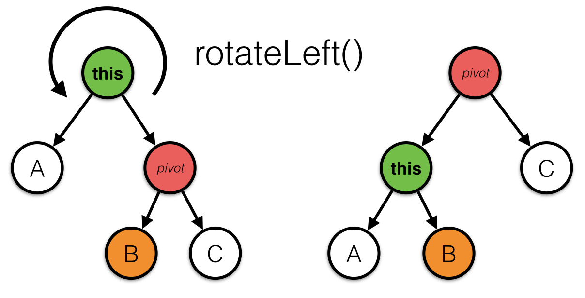
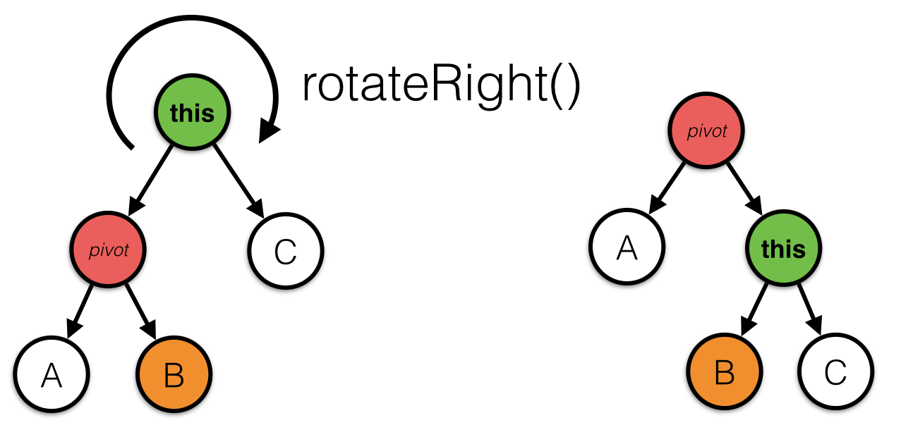
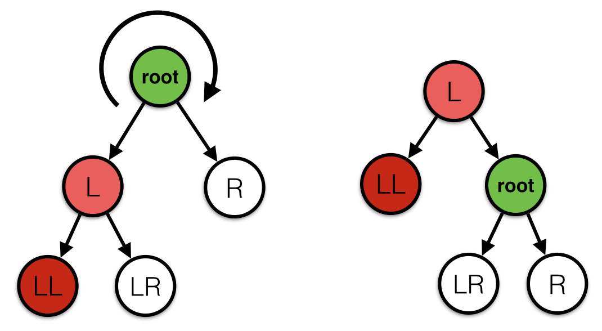
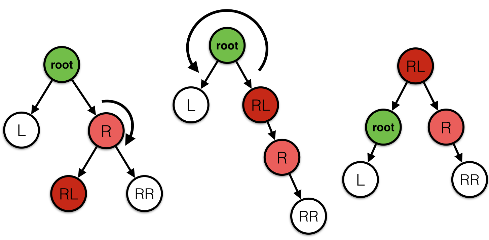
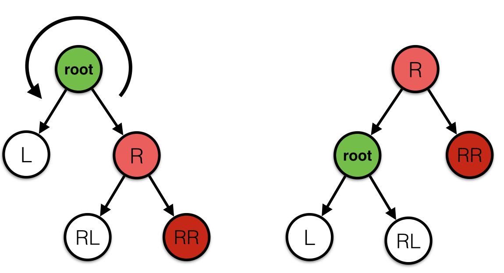

Binary trees kan je snel in zoeken en toevoegen, mits ze gebalanceerd zijn. Als elke node een rechterkind van de vorige node is 'hangt' de boom erg naar rechts toe en moet je nog steeds potentieel alle nodes doorlopen om toe te voegen en te zoeken. Self-balancing binary search trees proberen dit probleem op te lossen door na elke toevoeging de boom te 'fixen' zodat deze niet ongebalanceerd raakt.
Dit fixen gebeurd met zogenaamde boom rotaties. Een techniek waarbij je nodes verplaatst in de boom, zonder de volgorde van de nodes te verwisselen. Dit plaatje laat mooi zien wat er gebeurd als je nodes linksom of rechtsom roteert.
Als we in de boom hier rechts bijvoorbeeld een rotatie linksom doen op de root 0 dan wordt het rechterkind 2 de nieuwe root, 0 wordt een linkerkind van 2. En 1 wordt een rechterkind van 0. Daarmee is de boom iets minder uit balans, en is het nog steeds een geldige binary search tree.
Een self-balancing binary search tree probeert na elke insert en delete de boom weer terug in balans te brengen door rotaties uit te voeren. Deze week gaan we kijken naar één van de eerste technieken die hier voor zijn uitgevonden: de AVL tree.
Pretty printing
Om je te helpen hebben we een methode gemaakt die de structuur van de boom in de console print. De implementatie kan je hier vinden: BST.java, BSTNode.java. De eerste node die die print is de rechternode, de tweede de linkernode.
Als je de speciale karakters in Eclipse niet aan de praat krijgt ligt het misschien aan de text-encoding in Eclipse. Dit kan je oplossen door: Eclipse > Preferences > General > Workspace > Text file encoding to UTF-8.
Boom rotaties
Voordat we gaan beginnen met balanceren hebben we eerst nog twee methodes nodig waarmee we rotaties kunnen uitvoeren, rotateLeft() en rotateRight(). Deze methodes kan je uitvoeren op elke node in de boom (mits het bijbehorende pivot element bestaat). Deze gaan we later gebruiken om de boom gebalanceerd te krijgen. Let op dat deze functies eigenlijk heel kort en simpel zijn, je hoeft geen loops of recursie te gebruiken, alleen wat referenties anders te zetten.

public BSTNode rotateLeft()
Deze functie maakt de huidige node een linkerkind van de pivot (het rechterkind). Let goed op de afbeelding welke referenties er allemaal veranderen. Wat je teruggeeft is de nieuwe root van de subtree (de pivot dus).

public BSTNode rotateRight()
Deze functie maakt de huidige node een rechterkind van de pivot (het linkerkind). Let wederom goed op de afbeelding welke referenties er allemaal veranderen. Deze functie geeft ook weer de nieuwe root van de subtree terug (de pivot).
Als er geen pivot is omdat het linker- of rechterkind null is doen de rotatie functies niets. Test je methode goed uit met verschillende soorten bomen, het is belangrijk dat ze goed zijn om niet vast te lopen op de laatste opgave.
AVL Balans
In de sheets hebben we gezien dat een AVL boom een eigen definitie heeft van wanneer een boom in 'balans' is. Deze is anders dan onze definitie die we vorige week hebben behandeld! Een AVL boom is in balans als voor elke node geldt:
De linkernode is in balans
De rechternode is in balans
De hoogte van de linker-subtree (hoogte = hoeveel nodes diep je maximaal kan gaan, zie depth() vorige week) en de hoogte van de rechter-subtree verschilt met maximaal 1.
Bovenstaande boom is bijvoorbeeld een AVL boom die in balans is, ondanks dat hij een beetje naar links lijkt te hangen. Voor de node 8 is het diepste pad aan de linkerkant 4 lang (5-3-2-1), en aan de rechterkant 3 lang (11-10-9). Het verschil tussen 3 en 4 is 1, dus node 8 is in balans. Hetzelfde moeten we checken voor node 5, node 11 en alle andere nodes om te controleren of het een geldige AVL boom is
Kunnen we een leaf weghalen in bovenstaande boom en het AVL gebalanceerd houden? Zo ja, welke node kan er weg?
public boolean isAVLGebalanceerd()
Maak een methode in de klasse BSTNode die controleert of een subtree AVL gebalanceerd is. Je mag hiervoor gebruik maken van de methode depth() die je eerder hebt geschreven. Let goed op de definitie die we hierboven hebben opgesomt, je moet recursie gebruiken om de methode correct te implementeren.
AVL Tree
Tijd om met het echte werk te beginnen, het maken van een boom die zichzelf balanceert. Dit is één van de lastigste opgave van het vak, vraag dus gerust om hulp bij je medestudenten of de practicumdocent als je ergens op vastloopt. Op internet kan je ook veel informatie vinden over een AVL boom.
public BSTNode insertAVL(int number)
Maak een methode insertAVL() in de klasse BSTNode, deze methode gaat net als insert() die we al hadden gegeven op zoek naar een plekje in de binary search tree om het getal neer te zetten. Als je vastloopt, maak dan eerst de methode zonder verdere balanceercode die de node toevoegt alsof het een gewone binary search tree is.
Als insertAVL() een node heeft toegevoegd hebben we grote kans dat de boom niet meer AVL gebalanceerd is. Voordat de aanroep eindigt moeten we dit eerst fixen door rotaties uit te voeren. Als we rotaties uitvoeren verandert de root van de subtree waarin we bezig zijn. Het is zaak om dit door te geven aan de parent van de subtree zodat deze zijn referenties kan updaten. Dat is de reden dat de insertAVL() methode een BSTNode node teruggeeft, de aanroepende code krijgt dan de referentie naar de root van de gebalanceerde versie van de subtree.
Ok, je code heeft net recursief insertAVL() aangeroepen en de left en right pointers geupdate met mogelijke nieuwe roots van de subtrees, nu moeten we nog ervoor zorgen dat alles in balans raakt. Er is maar 1 node toegevoegd, dus het hoogteverschil tussen links en rechts kan nooit meer dan 2 zijn (1 was al toegestaan, plus de node die is toegevoegd.). Dit hoogteverschil kunnen we terugbrengen naar 1 en er weer een geldige AVL subtree van maken. Maar dan moeten we wel eerst kijken met welk van onderstaande vier gevallen we te maken hebben:
Links is te zwaar
Dit kunnen we oplossen door een rotatie naar rechts uit te voeren, maar we moeten wel uitkijken, want als we blindelings deze rotatie uitvoeren hebben we kans dat we juist rechts te zwaar maken. We moeten eerst kijken naar het linkerkind, of daar links of rechts te zwaar is.
Geval 1: Het linkerkind is links zwaarder (left-left)

Is links zwaarder, dan voer je een rotatie uit naar rechts over de root. Dit is ook het geval als links en rechts even zwaar zijn
Geval 2: Het linkerkind is rechts zwaarder (left-right)
Is rechts zwaarder, dan moet je eerst het linkerkind naar links roteren, en daarna pas over de root naar rechts roteren.
Rechts is te zwaar
Dit kunnen we oplossen door een rotatie naar links uit te voeren. Ook hier moeten kijken wat er zwaarder is in het rechterkind zodat we het probleem ook echt oplossen.
Geval 3: Het rechterkind is links zwaarder (right-left)

Is rechts zwaarder, dan moet je eerst het rechterkind naar rechts roteren, en daarna pas over de root naar rechts roteren.
Geval 4: Het rechterkind is rechts zwaarder (right-right)

Is rechts zwaarder, dan voer je een rotatie uit naar links over de root. Dit is ook het geval als in het rechterkind links en rechts even zwaar zijn
Controleer met welk geval je te maken hebt door depth aan te roepen op de relevante nodes, en roteer de boom volgens bovenstaande regels bij elke aanroep van insertAVL. Als de subtree al AVL gebalanceerd is hoef je uiteraard niks te doen.
Test je boom door er de getallen 1 tot en met 100 aan toe te voegen in oplopende volgorde. Als dit resulteert in een gebalanceerde boom heb je de opdracht goed gedaan!


{kind=link}